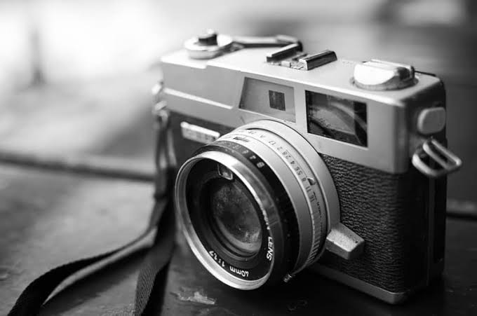

<main id="contenido-principal">
<article class="noticia-completa">
<header>
<p class="etiqueta">Formación cultural</p>
<h1>Nuevo taller de fotografía urbana</h1>
<p>Publicado el <time datetime="2026-08-12">12 de agosto de 2026</time></p>
</header>
<figure>

<figcaption>Recorrido de observación por el barrio.</figcaption>
</figure>
<p>La actividad invita a reconocer historias locales mediante
ejercicios de encuadre, luz y composición.</p>
<h2>Información de la actividad</h2>
<ul>
<li>Fecha: sábado 22 de agosto.</li>
<li>Duración: 3 horas.</li>
<li>Requisito: teléfono o cámara digital.</li>
</ul>
<p><a href="noticias.html">Volver a todas las noticias</a></p>
</article>
</main>